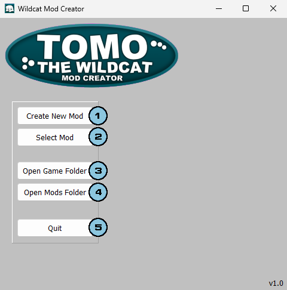

Previous (Requierements)
Starting Screen Guide
A simple guide on the starting screen of the mod creator.
(Image may or not be outdated, in any case the principles are the same.)
 Create New Mod Button
Create New Mod Button
Pressing it will intiate the mod creation process, asking you a name for your mod.
Select Mod Button
This button will open a file explorer dialog, to select a mod you have to go to it's folder and select "mod.ini".
This button will open a file explorer dialog, to select a mod you have to go to it's folder and select "mod.ini".
Open Game Folder Button
Pressing it will open the game's root folder in your file explorer.
Pressing it will open the game's root folder in your file explorer.
 Open Mods Folder Button
Open Mods Folder Button
Pressing it will open the game's mods folder in your file explorer.
 Quit Button
Quit Button
For closing the application.